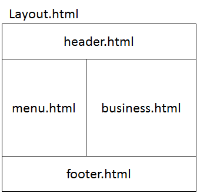

4.12. Thymeleafにおける画面レイアウト¶
目次
4.12.1. Overview¶
4.12.1.1. Thymeleafのテンプレートレイアウト機能を使用したHTMLの部品化¶
HTML部品の定義と参照のための機能¶ 項番 属性 説明
th:fragment
th:insert
th:replaceTip
上記以外に、
th:include属性が使用可能だが、Thymeleaf3.2で削除される予定のため推奨しない。th:include属性を指定すると、th:fragment属性を設定したタグの子要素のみが挿入される。th:include属性と同様の処理を行いたい場合は、th:fragment属性を設定したタグに、th:remove="tag"を設定した上で、th:insert属性を使用することで実現可能である。
th:insert 属性、th:replace 属性と組み合わせて使うことで、フラグメントやテンプレートHTMLの一部を他のテンプレートHTMLに埋め込むことができる。
フラグメント式の記述パターン¶ 項番 式 説明
~{Viewのパス :: セレクタ}Viewのパスで指定されたテンプレートHTMLから、指定されたセレクタに該当する要素を特定し取得する。
~{Viewのパス :: フラグメント名}Viewのパスで指定されたテンプレートHTMLから、指定されたフラグメント名に一致するth:fragment属性が設定された要素を特定し取得する。
~{Viewのパス}Viewのパスで指定されたテンプレートHTML全体を取得する。
~{:: セレクタ}セレクタに該当する要素を特定し取得する。セレクタの代わりにフラグメント名を指定することも可能である。
~{this :: セレクタ}Note
フラグメント式は、セレクタを使って自由に他のテンプレートHTMLの一部を取得できてしまうので、多用はHTMLの構造を複雑化させる。 そのためプロジェクト全体で共通部品として何をフラグメント化するかを決めて使用することが推奨される。
th:fragment属性を利用して定義したフラグメントは、th:fragment="フラグメント名 (param1,param2)"のようにパラメータを取ることが可能である。~{Viewのパス :: フラグメント名 (${address},true)}のようにフラグメント式のフラグメント名の後ろに、パラメータとして渡す値を記述する。${...}）やリテラル（文字列、真偽値など）のほか、フラグメント式（~{...}）を指定することも可能である。Note
パラメータを渡す際に、
~{Viewのパス :: フラグメント名 (param1=${address},param2=true)}のようにパラメータ名を明示的に記述することも可能である。 この場合、パラメータを渡す順序はフラグメントで定義したパラメータの順序と異なっていても問題ない。 なお、本ガイドラインでは可読性と記述の簡潔さを重視し、パラメータ名を記述しない方法を推奨する。
4.12.1.2. 共通的な画面レイアウトの作成¶
- 設計者によるレイアウトの誤差をなくすこと
- 冗長なコードを減らすこと
- 大きなレイアウトの変更が容易になること

Picture - Image of screen layout
Picture - Image of layout html
{kind=link}
よって、統一的な画面レイアウトを定義した後は、業務に相当するHTMLファイルのみ(business.html)画面毎に作成すればよい。
Note
Thymeleafのテンプレートレイアウト機能を使用した統一的な画面レイアウトを適用しない方がよい場合もある。例えば、エラー画面に統一的な画面レイアウトを使用するのは、以下の理由により推奨しない。
- エラー画面表示中に共通的なレイアウトの部分にエラーが発生すると解析がしにくくなるため。(二重障害発生の場合)
4.12.2. How to use¶
4.12.2.1. Thymeleafのテンプレートレイアウト機能を使用した画面レイアウト¶
4.12.2.1.1. レイアウト作成¶
以降、以下のファイル構成を前提に画面レイアウトの作成方法を示す。
- File Path
WEB-INF └─views ├─layout │ header.html │ template.html │ footer.html │ └─staff createForm.html
レイアウトの枠となるHTMLファイル（template.html）と、レイアウトに埋め込むHTMLファイルを作成する。
- template.html
<!DOCTYPE html> <!--/* (1) */--> <html class="no-js" xmlns:th="http://www.thymeleaf.org" th:fragment="layout (title,body)"> <head> <meta charset="utf-8"> <meta http-equiv="X-UA-Compatible" content="IE=edge,chrome=1"> <meta name="viewport" content="width=device-width"> <link rel="stylesheet" th:href="@{/resources/app/css/styles.css}" type="text/css" media="screen, projection"> <script type="text/javascript"> </script> <!--/* (2) */--> <title th:replace="${title}">Staff Management System</title> </head> <body> <!--/* (3) */--> <div id="header" th:replace="~{layout/header :: header}"></div> <!--/* (4) */--> <div id="body" th:replace="${body}"></div> <!--/* (5) */--> <div id="footer" th:replace="~{layout/footer :: footer}"></div> </body> </html>
項番 説明 layoutという名前でフラグメント化し、個別のテンプレートHTMLと合成できるようにしている。また、個別画面（createForm.html）のtitleタグとbodyタグの内容をパラメータとして受け取っている。th:replace属性を使用して(1)でパラメータとして受け取った個別画面（createForm.html）のtitleタグの内容で置換している。th:replace属性を使用して後述するlayout/headar.htmlのheaderフラグメントで置換している。th:replace属性を使用して(1)でパラメータとして受け取った個別画面（createForm.html）のbodyタグ内のコンテンツで置換している。th:replace属性を使用し、後述するlayout/footer.htmlのfooterフラグメントで置換している。Note
th:replace="~{layout/header :: header}"は、~{}を省略して、th:replace="layout/header :: header"と書くこともできるが、本ガイドラインでは可読性を重視し~{}を省略しないことを推奨する。
- header.html
<!DOCTYPE html> <html xmlns:th="http://www.thymeleaf.org"> <head> <title>header</title> </head> <body> <!--/* (1) */--> <div th:fragment="header" th:remove="tag"> <h1> <a th:href="@{/}">Staff Management System</a> </h1> </div> </body> </html>
項番 説明 th:fragment属性を使用し、headerという名前でフラグメント化している。画面レイアウトを合成するなかで使用されるのはフラグメント化された部分のみ。ここでは、単独でHTMLとして表示できるようにbodyタグ以上のタグも記述し仮のタイトルを記述している。また、th:replace属性を使用して合成したときにdivタグを残さないため、th:remove属性の値にtagを設定している。
createForm.html(body部分の例)
開発者は、個別画面のコンテンツ（主にbody部分）のみに集中して記述できる。
<!DOCTYPE html> <!--/* (1) */--> <html xmlns:th="http://www.thymeleaf.org" th:replace="~{layout/template :: layout(~{::title},~{::body/content()})}"> <head> <!--/* (2) */--> <title>Create Staff Information</title> </head> <body> <h2>Create Staff Information</h2> <form th:object="${staffInfoForm}" method="post" th:action="@{/staff/create}"> <table> <tr> <td>Staff First Name</td> <td><input type="text" th:field="*{firstName}"></td> </tr> <tr> <td>Staff Family Name</td> <td><input type="text" th:field="*{familyName}"></td> </tr> <tr> <td rowspan="5">Staff Authorities</td> <td><input type="checkbox" value="01" th:field="*{authorities}"> Staff Management</td> </tr> <tr> <td><input type="checkbox" value="02" th:field="*{authorities}"> Master Management</td> </tr> <tr> <td><input type="checkbox" value="03" th:field="*{authorities}"> Stock Management</td> </tr> <tr> <td><input type="checkbox" value="04" th:field="*{authorities}"> Order Management</td> </tr> <tr> <td><input type="checkbox" value="05" th:field="*{authorities}"> Show Shopping Management</td> </tr> </table> <input type="submit" value="cancel"> <input type="submit" value="confirm"> </form> </body> </html>
項番 説明 th:replace属性を使用して、テンプレートであるlayout/template.htmlのlayoutフラグメントの内容でhtmlタグ以下の内容を置換している。~{::title}は自身のテンプレートHTMLのtitleタグを、~{::body/content()}は自身のテンプレートHTMLのbodyタグ内のコンテンツを取得している。そして、自身のHTMLのtitleタグ、bodyタグをlayout/template.htmlのlayoutフラグメントにパラメータとして渡している。そのため、 画面レイアウトを合成するなかで使用されるのはパラメータとして渡したtitleタグ、bodyタグの内容のみである。ここでは、単独でHTMLとして表示できるようにbodyタグ以上のタグも記述し仮のタイトルを記述している。titleタグを置き換えるタイトルメッセージを定義している。Note
上記の実装例に示した通り、適用するテンプレートを画面ごとに指定する形になっているので、指定するテンプレートを変えることで別のレイアウトを適用することができる。 複数のテンプレートレイアウトを使い分けることで、同一アプリケーション内で異なる画面レイアウトに対応することが可能となっている。
Note
個別画面で
titleタグを定義せず、テンプレートのtitleタグの内容をそのまま使用する場合は、no-operation token(“_” ) を使用して、th:replace="~{layout/template :: layout(_,~{::body/content()})}"と記述する。 no-operation tokenについては、条件を判定するのNoteも参照されたい。
- footer.html
<!DOCTYPE html> <html xmlns:th="http://www.thymeleaf.org"> <head> <title>footer</title> </head> <body> <div th:fragment="footer" th:remove="tag"> <!--/* (1) */--> <p style="text-align: center; background: #e5eCf9;">Copyright © 20XX CompanyName</p> </div> </body> </html>
項番 説明 th:fragment属性を使用し、footerという名前でフラグメント化している。画面レイアウトを合成するなかで使用されるのはフラグメント化された部分のみである。ここでは、単独でHTMLとして表示できるようにbodyタグ以上のタグも記述し仮のタイトルを記述している。また、合成後にdivタグを残さないため、th:remove属性の値にtagを設定している。Note
フッターに記載する著作権に関しては 画面フッターの著作権 を参照すること。
結果として上記のtemplate.htmlに、header.html、createForm.html、footer.htmlが組み合わされた方法でブラウザに出力される。
{kind=link}
出力されるHTMLは以下の通り。
<!DOCTYPE html> <html class="no-js"> <head> <meta charset="utf-8"> <meta http-equiv="X-UA-Compatible" content="IE=edge,chrome=1"> <meta name="viewport" content="width=device-width"> <link rel="stylesheet" href="/staff-management-web/resources/app/css/styles.css" type="text/css" media="screen, projection"> <script type="text/javascript"> </script> <title>Create Staff Information</title> </head> <body> <h1> <a href="/staff-management-web/">Staff Management System</a> </h1> <h2>Create Staff Information</h2> <form method="post" action="/staff-management-web/staff/create"><input type="hidden" name="_csrf" value="2557dc95-6f36-4c2c-9900-9e0efd411ad7"> <table> <tr> <td>Staff First Name</td> <td><input type="text" id="firstName" name="firstName" value=""></td> </tr> <tr> <td>Staff Family Name</td> <td><input type="text" id="familyName" name="familyName" value=""></td> </tr> <tr> <td rowspan="5">Staff Authorities</td> <td><input type="checkbox" value="01" id="authorities1" name="authorities"><input type="hidden" name="_authorities" value="on"> Staff Management</td> </tr> <tr> <td><input type="checkbox" value="02" id="authorities2" name="authorities"><input type="hidden" name="_authorities" value="on"> Master Management</td> </tr> <tr> <td><input type="checkbox" value="03" id="authorities3" name="authorities"><input type="hidden" name="_authorities" value="on"> Stock Management</td> </tr> <tr> <td><input type="checkbox" value="04" id="authorities4" name="authorities"><input type="hidden" name="_authorities" value="on"> Order Management</td> </tr> <tr> <td><input type="checkbox" value="05" id="authorities5" name="authorities"><input type="hidden" name="_authorities" value="on"> Show Shopping Management</td> </tr> </table> <input type="submit" value="cancel"> <input type="submit" value="confirm"> </form> <p style="text-align: center; background: #e5eCf9;">Copyright © 20XX CompanyName</p> </body> </html>Note
上記の例では、bodyタグ内のコンテンツ以外にtilteタグを渡しているが、フラグメントに引数を追加することで任意のパラメータを個別画面からテンプレートに渡すことができる。以下はscriptタグの例である。
- template.html
<!DOCTYPE html> <!--/* (1) */--> <html class="no-js" xmlns:th="http://www.thymeleaf.org" th:fragment="layout (title,script,body)"> <head> <meta charset="utf-8"> <meta http-equiv="X-UA-Compatible" content="IE=edge,chrome=1"> <meta name="viewport" content="width=device-width"> <link rel="stylesheet" th:href="@{/resources/app/css/styles.css}" type="text/css" media="screen, projection"> <!--/* (2) */--> <script type="text/javascript" th:replace="${script}"> </script> <title th:replace="${title}">Staff Management System</title> </head> <!-- omitted --> </html>
項番 説明 layoutフラグメントに、個別画面のscriptタグの内容をパラメータとして受け取るための引数scriptを追加する。th:replace属性を使用して、(1)でパラメータとして受け取ったscriptタグの内容で置換する。なお、タグごと置換されるのでscriptタグ以外のダミーのタグに同様の設定をしても問題なく動作する。
- createForm.html(body部分の例)
<!DOCTYPE html> <!--/* (1) */--> <html xmlns:th="http://www.thymeleaf.org" th:replace="~{layout/template :: layout(~{::title},~{::script},~{::body/content()})}"> <head> <title>Create Staff Information</title> <!--/* (2) */--> <script type="text/javascript" th:src="@{/resources/app/js/sample.js}"></script> </head> <body> <h2>Create Staff Information</h2> <!-- omitted --> </html>
項番 説明 th:replace属性のlayoutフラグメントを指定している箇所にパラメータとしてフラグメント式~{::script}を追加する。scriptタグを定義し、使用するJavaScriptファイルを読み込んでいる。Warning
テンプレートレイアウトにより部品化する際に、フラグメント（部品）に引数として式を与える場合には、式を
th:objectと選択変数式*{}ではなく、変数式${}で組み立てなければならない。 これは、部品内でth:objectと選択変数式*{}を使用していても、部品を呼び出す側が与えた式の意味(参照するもの)が変わらないようにするための(裏を返せば、部品内でのth:objectと選択変数式*{}の使用を制限せずに済むための)ルールである。 こちらの詳細については、オブジェクトのプロパティを省略して指定するのWarningを参照されたい。
4.12.3. How to extend¶
4.12.3.1. 汎用的なHTML部品の作成方法¶
th:fragment属性を使用して汎用的なHTML部品（フラグメント）を作成することができる。Model に格納された org.terasoluna.gfw.common.message.ResultMessages を参照し、結果メッセージを出力するフラグメントを作成する。- common-parts.html
<!DOCTYPE html> <html xmlns:th="http://www.thymeleaf.org"> <head> <title>common-parts</title> </head> <body> <!--/* (1) */--> <div th:fragment="messagesPanel" th:if="${resultMessages} != null" th:class="|alert alert-${resultMessages.type}|"> <ul> <!--/* (2) */--> <li th:each="message : ${resultMessages}" th:text="${message.code} != null ? ${#messages.msgWithParams(message.code, message.args)} : ${message.text}">blank messages</li> </ul> </div> </body> </html>
項番 説明 th:fragment属性を使用し、messagesPanelという名前でフラグメント化する。th:if属性は、条件に応じて、タグを生成するかどうか制御するための属性である。ここでは、resultMessagesがnullの場合に、結果メッセージを表示するHTMLを生成しないようにしている。また、th:class属性を使用し、ResultMessagesに設定されたメッセージタイプ（例:info,error）に応じたclass属性を設定する。th:each属性は、コレクションや配列に対して繰り返し処理を行うための属性である。ResultMessagesには、複数件の結果メッセージを格納できるので、それを1件づつ取得し、liタグを生成している。メッセージの取得はThymeleafの#messagesを使用する。その#messages.msgWithParams({メッセージID},{置換文字列})メソッドを使用することで、プロパティファイルからメッセージを取得することができる。
messagesPanelを各テンプレートHTMLにおいて使用する。- businessError.html
<!DOCTYPE html> <html xmlns:th="http://www.thymeleaf.org"> <head> <meta charset="utf-8"> <title>Business Error!</title> <link rel="stylesheet" href="../../../../resources/app/css/styles.css" th:href="@{/resources/app/css/styles.css}"> </head> <body> <div id="wrapper"> <h1>Business Error!</h1> <div class="error"> <span th:text="${#strings.isEmpty(exceptionCode)} ? #{e.xx.fw.8001} : |[${exceptionCode}] #{${exceptionCode}}|"></span> <!-- (1) --> <span th:replace="~{common/common-parts :: messagesPanel}"></span> </div> <br> <!-- omitted --> </div> </body> </html>
項番 説明 th:replace属性を使用して、”messagesPanel”フラグメントの内容で置換している。
org.terasoluna.gfw.common.message.ResultMessages に結果メッセージが格納されている場合、結果として、businessError.htmlの一部にmessagesPanelの内容が埋め込まれた形でブラウザに出力される。
{kind=link}
出力されるHTMLは以下の通り。
<!DOCTYPE html> <html> <head> <meta charset="utf-8"> <title>Business Error!</title> <link rel="stylesheet" href="/staff-management-web/resources/app/css/styles.css" type="text/css"> </head> <body> <div id="wrapper"> <h1>Business Error!</h1> <div class="error"> <span>[e.xx.fw.8001] Business error occurred!</span> <div class="alert alert-error"> <ul> <li>Create Staff error occurred!</li> </ul> </div> </div> <br> <!-- omitted --> </div> </body> </html>